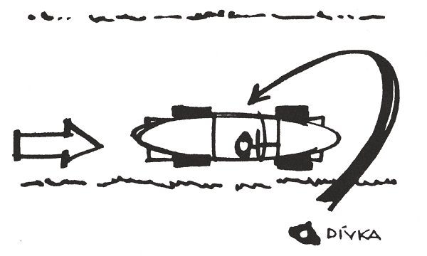

Ležíme s Laurou na stráni v příjemným stínečku jakejchsi stromečků, kterým se říká pinie, před náma senzační výhled na nejmenší státeček světa San Marino, Laura brebentí češtinou, do které mísí četná slova italská, pátý přes devátý, a mně je blaze víc než v Praze. Je prima den, jsem daleko od Kartouz, za hranicema, Kartouzy jsou už úplně předminulá minulost, a teď nade mnou běsní středozemní slunce, obloha je modrá a šichta v baru Orient v Rimini začíná až v jedenáct večer. Laura, která není žádná Laura, ale Lubomíra Vosáhlová, kamarádka ještě z našeho starýho dobrýho biskupáku v Zeleným Hradci, kam jsme do naší třídy chodily jenom my dvě externistky, obě ze zbožnejch rodin, a dělaly neklidný sny těm hošíkům, co se tam šprtánim řečtiny připravovali ponejvíc na pozdější dráhu kněžskou, ta samá Lubomíra, chytře provdaná do Itálie a žijící zde v hříchu, vykládá mi zlomyslnosti o svým manželu velkoobchodníkovi, kterej neni žádnej její manžel, nýbrž pouze druh, protože Laura byla už jednou vdaná a teď je rozvedená a takový poběhlice se v Itálii podruhý vdát nemůžou, ponivač tady jsou v některejch ohledech zbožnější než na biskupáku. A tak spolu žijou Laura s velkoobchodníkem v hříchu, a v hříchu Laura povila sedm dětí, proto tolik, že těch prvních šest byly holky a ty velkoobchodník, říčnej na dědice, nepokládal jaksi za potomstvo.
Pod náma, mezi stromy a keři, se vine šedivá betonka a po ní sem tam přejížděj autíčka v pastelovejch barvách, mně se klížej voči, Lauřino žvanění mě uspává, z Laury je dokonalá Taliánka a ten její manželík, to taky není žádnej velkoobchodník, všechno je vůbec jinak, za velkoobchodníka se pouze vydává, když přijede do Prahy předvádět symboly svýho společenskýho postavení, který, hlavně v podobě briliantovejch náhrdelníků, vystavuje na Lauřinym nedostižným poprsí v gigantickým dekoltu po elegantnějších pražskejch barech. Ve skutečnosti má Giulio docela mrňavej zlatej dolíček, takovej krámík, kde prodává konzervy s mořskym vzduchem a upomínkový předměty z mušlí, takový, že musí kupcům při vzpomínce na Rimini ještě po letech nahánět hrůzu.
Ale zřejmě to jde na odbyt, krámeček sype miliónky lir, Lauřiny brilianty jsou pravý brilianty a ten červenej sporťáček, co stojí na polní cestě kousek od nás, je opravdu Lauřin sporťáček, příjemnej suvenýr na poslední, konečně úspěšnej porod prvorozenýho syna.
A Laura, celá bez sebe, že mě Pragokoncert dodal rovnou do Rimini, si mě plete s vrbou, mele a plácá, i když mám podezření, že mě na ty věčný pikniky za město vyváží hlavně proto, aby nebyla spatřená riminskou honorací ve společnosti sůvy z baru Orient, tedy mě. Čeština se z ní sype tempem italštiny a mně se klíží oči a klíží, chce se mi spát. Za křovím na silnici se objeví nějaká holka v šortkách, na zádech ruksak s vlaječkou, na tu dálku neznámo jakou, stopařka, a kráčí pomalu dlouhýma kroky po kraji betonky, slunce jí zapaluje zrzavou hlavu měděnou září. Pak se zastaví, otočí, zvedne ruku, dá paleček vzhůru, jak to tu holky dělaj. A už zaševelí brzdy, už na silnici zastavuje vozejk barvy malin a v něm pán celej v bílym, no aby nezastavil, když má ta dívčina takový okončetiny, a holka obíhá chladič, hups do vozejku a vozejk odpálí jako vystřelenej z děla. A já v tu chvíli usínám a spim na tom čerstvým piniovym vzduchu, co ho Giulio prodává blbejm Američanum, a spim jak zabitá.
* * *
Proto jsem taky neměla tuchy, kolik času vlastně uplynulo do nenávratna, když mě Laura vzbudila. Slunce, aspoň se mi zdálo, sebou skoro ani nehnulo, sbalily jsme zbytky ohromného pikniku, nasedly do sporťáčku, skodrcaly po klikatý polní cestě mezi keříčkama na betonku, a tam Laura dala vozejku do těla. Rrrrup – v rychlostní skříni se ozve nezdravej zvuk, ale už si to hasíme stotřicítkou po šedivý betonce, mezi piniema a živejma ploty, a když se ohlídnu nalevo na Lauru, má svůj nádhernej antickej profil hrdě vztyčenej na pozadí rozmazanejch zelení a havraní vlasy jí plápolaj ve větru jak černá pochodeň.
* * *
Jenže daleko jsme nedojely. Zrovna když Laura, na dvou kolech, vybrala ostrou zatáčku kolem motoristický kaple svatýho Kryštofa, vyloup se před náma z perspektivy bílej policejní džíp, za nim hlouček policajtů a jeden zved plácačku a stopnul nás, taktak to Laura stačila ubrzdit.
„Co se stalo?“ vyhrkla Laura, oči vyvalený a lačný krvavejch podívanejch. Ale mladíček s důležitym obličejem ve vyžehlený uniformě jenom ukázal plácačkou na odbočku mezi piniema a řek:
„Tudy, prosím.“
Tak jsme tam zahly a za chvilku se před náma vynoří parkovišťátko s výletní restaurací a před ní v řadě jako na výstavu seřazenejch pět sporťáčků barvy malin a u každýho pán v bílym a u každýho pána dva policajti a všichni spolu vedou diskusi, jak se řiká, vzrušenou, zřejmě se jim něco nelíbí. A já tonu v nevědomosti, o co jde.
* * *
Z tý nevědomosti mě vysvobodil kapitán, kterej se jmenoval Hercule Potarot, což snad byl nějakej vtip jistym způsobem sečtělejch rodičů. Vyvalil nejdřív oči na náš sporťáček a na mladíčka s důležitým obličejem, kterej si naskočil na chladič a zaved nás na parkovišťátko, a sotva Laura zabrzdila, zařval na toho vyžehlence:
„Idiote! Proč obtěžuješ dámy? Co jsi to za vola, ty krávo?“
Dobře jsem mu rozuměla. Zakládal si na spisovný, i když, pokud jde o slovník, dost lidový italštině. Uklonil se směrem k Lauře a hned se taky omluvil za drsnou služební řeč. Laura se usmála a vystrčila na kapitána útočnej dekolt.
Mladíček zakoktal:
„Podle rozkazu jsem zadržel sportovní vůz červené barvy, jedoucí ve směru na San M –“
„Ach, věčný Bože na nebesích!“ kapitán se nádherně uchopil za hlavu a zadupal. „Myslet!“ Pěstí se udeřil do čela. „Přemýšlet, člověče! Copak se dáma na dámě může dopustit vraždy z vilnosti?“
Tím jsem se konečně dověděla, proč tu stojí těch pět vzrušenejch pánů v bílejch kombinézách. Laura se jakoby s potlačeným výkřikem vztyčila na sedadle, otevřela dvířka a vzhledem k svýmu společenskýmu postavení omdlela dekoltem rovnou do náruče kapitána Potarota.
* * *
Vyšlo najevo, že kapitán Lauru zná, a to tak říkajíc dost dobře. Aspoň její cukrbliky nevypadaly na premiéru, a kapitán taky moc přeochotně podal referát.
„Došlo k tomu na sedmasedmdesátém kilometru,“ začal. „Zajel jsem si na motocyklu k příteli, který tam vlastní bungalov, a jak jdu od něho polní cestou k silnici, uslyším náhle z křoví u krajnice zoufalé volání o pomoc. Běžím tam, ale je pozdě. Žena už je mrtvá, uškrcená, oděv částečně serván z těla, ale ptáčka jsem zřejmě vyrušil, neměl čas dokonat svůj ohavný záměr. Rozhlédnu se a v křoví vidím mizet chlapa celého v bílém.“ Kapitán dojatě vzdychl, ačkoliv to dojetí bylo asi tak původní jako Lauřiny mdloby. „Bohu budiž žalováno, spatřil jsem pouze záda. Takže to mohl být kterýkoliv tady z těch pěti výtečníků!“ Mávl rukou směrem k pěti diskutujícím pánům a jeho pohled, bez ohledu na presumpci neviny, je zahrnul všechny stejným opovržením, ačkoliv vinen moh bejt nanejvejš jeden. „A co je horší,“ svraštil zoufale čelo, „nezahlédl jsem pořádně ani vůz té bestie. Krylo jej křoví. Všiml jsem si pouze, že je to malinově červený vůz, s největší pravděpodobností otevřené sportovní vozidlo.“
Zase kouk směrem k vzrušenýmu debatnímu kroužku. „Ale jestli masseratti,“ pravil, „porsche, jaguár, austin nebo alfa romeo – kdo to ví?“ Zvednul ruce k nebi, a už jsem si myslela, že jima skutečně zalomí. Neudělal to však, jenom je nechal bezmocně klesnout k bokům. „Nemáme se čeho chytit. Jeden z tamhletěch holomků to určitě byl, běžel jsem totiž hned k příteli do bungalovu a podařilo se mi telefonicky uzavřít silnici na stodvacátém kilometru, kde máme stanici silniční policie.“ Rozhořčeně se zamračil na zámožné muže, které před chvílí nazval holomky. „Mezi sedmasedmdesátým a stodvacátým kilometrem není žádná odbočka, žádná vedlejší cesta, a od chvíle, kdy jsem viděl toho padoucha startovat, až do chvíle, kdy naši uzavřeli silnici, neuběhly víc než čtyři minuty. Aby bídák ujel za čtyři minuty,“ kapitán roztáhl prsty levé ruky a něco na nich počítal, „třiačtyřicet kilometrů, musel by vyvinout rychlost,“ zase počítal, „šest set šedesát kilometrů v hodině. To by byl absolutní světový rekord,“ udiveně pohlédl na malinové vozíky. „To žádné z těchhle vozidel nedokáže, ani na dně Solného jezera. Nene! Jeden z těch zvrhlíků to je!“ zabušil pěstí do stolu a muži, degradovaní teď už na zvrhlíky, na moment přestali diskutovat a koukli se směrem k nám. Kapitán prohlásil, že můžem pochopitelně pokračovat v krasojízdě, neb nás se to netejká.
Laura však našpulila pusu a udělala na kapitána zamilovaný oči: „Prosím, Hercule, mohly bychom aspoň vidět tu ženu?“
„Ach, to není nic pro dámy!“ zašklebil se kapitán. „Není to vůbec pěkný pohled.“
„Třeba bychom vám mohly nějak pomoci,“ žadonila Laura.
„Jak, signora!“ vzdychl kapitán tak tragicky, že mu málem vytryskly slzy. „Nemůžete ji ani znát. Není zdejší a není to také ani lázeňský host. Je to cizinka, patrně studentka. A byl bych velice nerad, kdybyste zase měla omdlít.“
Cizinka. Studentka. Něco se mi hnulo v kastlíku, jako v polospánku. Mrkla jsem korunama pinií ke slunci. Horkem přímo syčelo, vrhalo příjemný stíny na hospodu s oranžovou střechou, na pány v bílým, který se už zas pustili do diskuse, na kapitána se žlutejma bulvama a na Lauru v tenkejch šatech, navlečenejch na její junonický tělo jak těsná rukavice. Kapitán jistě musel aspoň zadoufat, že prasknou.
„Signore capitano,“ oslovila jsem kapitána svou velice prolamovanou italštinou. „Nebyl na tý cizince ruksak?“
Asi jsem udělala nějakou gramatickou chybu, ponivač kapitán se usmál a hned zase nastražil uši. „Ruksak? Na ní ne, ale vedle ní,“ pravil vtipně. „Jak to víte?“
„Viděla jsem takovýho cizinku,“ přednášela jsem svědomitě. „V krátkejch kalhotkách a s ruksakem a na něm vlaječka.“
„Jaká vlaječka?“ skočil mi do řeči.
„Nějaká,“ řekla jsem. „Byla moc daleko. Ale dívka zastavila červený auto s bílým mužem. Běžela kolem chladiče okolo a sedla vedle.“
„Díky, Bože, díky!“ zvolal kapitán k nebesům. Pak se otočil k panstvu v bílém a zařval krvelačně. „Teď uvidíte, holomci! Očitý svědek!“
Zahrozil na ně pěstí, na mě vycenil chrup a pravil galantně:
„Popište, prosím, bílého muže v červeném autě.“
„Bílého muže nemůžu,“ namáhala jsem se dál.
Kapitán zaúpěl:
„Proboha, proč? Muž je přece větší než vlaječka?“
„Je větší,“ vykládala jsem rozvážně a hledala slovíčka. „Ale já pozorovala pouze dívku v krátkých kalhotkách. Měla pěkné dlouhé nohy. Ty jsem pozorovala, když ona obcházela předek okolo a sedla vedle.“
Kapitánovi svítivý úsměv pohasl. Pravil zklamaně:
„Nohy? Proč signora pozoruje nohy? Proč ženské? Proč ne pánské?“ žasl a úžasem sáklo nějaký podezření. Šlehl žlutým očkem po ztepilý Lauře, bleskově odhad mou vizáž s barovejma kruhama pod očima, kterejch já ne a ne se zbavit, a podezření, jak se říká, rozkošatělo. Ale odpalírovala jsem ho:
„Protože bílý muž měl nohy zastrčené v autě,“ pravila jsem. „Ostatně páni vždy mívají nohy zastrčené v kalhoty. Není dosti k pozorování.“
Nevzdal se sice toho svýho pikantního podezření, ale přišel na novou spásnou myšlenku. Chrup, kterej by moh pronajímat na reklamní fotografie, zase přede mnou zaperleťovatěl.
„Nevadí,“ zvolal. „Pán měl nohy zastrčené v autě. Ale auto nebylo zastrčeno v ničem!“ zaopičil se po mý cizinecký italštině. „Auto jste viděla úplně celé, ano?“
„Ano. Bylo to malinové auto beze střechy.“
„A jaký typ? Jaká značka?“ Kapitán ukázal na pět luxusních vozejků před hospodou. Koukla jsem na ně, ale bylo mi to přirozeně málo platný.
„Já nevím,“ řekla jsem. „Já se v autech nevypoznám.“
Kapitán těžce dosedl na židli a chytil se za hlavu.
„Proč mě trestáš, veliký Bože!“ zaúpěl. „Sešleš očitého svědka – a on se nevypozná v automobilech!“ Pak vytřeštil oči a pravil vítězně: „Ale zase nevadí. Signorina viděla celé auto, signorina ho prostě pozná od vidění!“
A už mě vlík za ruku k tý svý malý soukromý výstavě motosportu.
Jenže, jak jsem řekla, všechno málo platný.
Prohlížím si ty luxusní vozítka jedno po druhým a nic mi to neříká.
Kapitána to vzalo. Kles na lavičku před hospodou a jal se proklínat Boha, kterýho do tý chvíle servilně vzýval. Rozhlídla jsem se a vidím, že zatímco já prohlížela vozejky, Laura si prohlíží vozataje. Mrknu taky tím směrem a zdáli se mi najednou jako ty auta, jeden jako druhej, všichni ulízaný, osmahlý, černovlasí playboyové, sériová výroba, jenom dva z nich nepatrně ozvláštněný knírkem.
Kouknu zase na kapitána a ten se právě zvedá jak hypnotizovanej, plíživě se přibližuje k Lauře, která je zahleděná na těch pět samečků v bílým, co jeden z nich je vrah z vilnosti, a už je kapitán u ní a oslovuje ji úlisně zespoda:
„Signora taky viděla bílého muže! A signora je nádherná žena, stoprocentní žena. Signora si nevšímá ženských nohou v krátkých kalhotkách. Signora si všimla muže! Mám pravdu? Jak vypadal?“
Tenhle kašulírismus vykouzlil na Lauřinym antickým obličeji výraz hluboký odpovědnosti a já věděla, že je zle. Laura si začne vymejšlet.
„Když já nevím…“ zamrckovala. „Ono to přece jen bylo dost daleko…“
„Ach, signora má nádherné oči,“ pracoval dále kapitán. „Nádherné oči! Signora si jistě vybaví podobu. Pozor!“ zařval zničehonic a bez ohledu na protesty dal těch pět playboyů nastoupit do řady, uklonil se před Laurou a gestem naznačil, že má jako hochy k dispozici.
Laura se předvedla bez chyby. Obešla každýho zvlášť, kolem dokolečka, mhouřila veliký oči, přistupovala a odstupovala, trvalo to asi tisíc hodin. Nakonec poodešla stranou, kde se kapitán celou tu dobu pohupoval na patách a zářil, a tam dali hlavy dohromady. Rokovali tiše, tichounce, občas šlehli okem po těch pěti zoufalcích, kterejm po čílkách zurčel pot, až kapitán nakonec to divadýlko přece jen zakončil, povídal zvučně „Mno!“, upravil si sako a rázným krokem si zapromenoval sem tam kolem bělostný řady. A zase sem tam a ještě jednou, natahoval to teda mistrovsky. Pak se zastavil před jedním, černovlasým, ulízaným a patrně i vylízaným jako všichni ostatní, absolutně vyloučený, že by na tu dálku byli šli rozeznat, přikrčil se – a divoce skočil po jeho sousedovi, právě když ten si užuž oddechoval.
„A máme tě, bestie!“ zařval vítězně. „Já věděl, že to seš ty! Přiznej se!“
* * *
Vybranej playboy se jmenoval Fillippo Terra, klepal se jak to jeho jméno a nebylo mi nejasný, proč si ho Laura vybrala. Byl ze všech pěti o poznání nejhezčí a nejvylízanější.
Hnedka jsem se jí v duchu skoro omluvila za to podezření. Ukázalo se totiž, že Potarot Terru zná, osobně i z trestního rejstříku, kde měli hošíka zanešenýho pro znásilnění jakýsi slečny. Znásilnění to bylo dost pochybný, Fillippo tvrdil, že ve skutečnosti šlo o svedení, ale policajti byli galantní a nadržovali slečně. Hoch to měl teda polepený a Laura se zřejmě trefila do černýho.
A mimoto se stalo něco, co vypadalo na definitivní zpečetění playboyovýho osudu. Policajti na kapitánův rozkaz začenichali v Terrovým auťáku a jeden tam něco našel, něco maličkýho, a podal to kapitánovi. Ten na to mrk a oči mu zaplápolaly.
„Tak ty se nepřiznáš, mizero?“
„Nepřiznám,“ řekl zatvrzele Terra.
„A jak vysvětlíš, kde se v tvém autě vzalo tohle!“ kapitán přidržel playboyovi před očima věcičku, kterou našli v autě. Byl to normální papírek od žvejkačky, ale hošík přesto zbled.
„Koupil jsem si to – myslím žvejkačku –“
„Kde!?“
„V –“ mládenec naprosto zrosolovatěl, „– v automatu u Picciniho –“
Kapitán se ušklíbl a z papírku přeslabikoval: „Made in Denmark. Tak zavoláme Piccinimu, jestli vede dánské žvýkací gumy.“
Upřel na playboye žlutý zrak a hošík se vůčihledně měnil v sulc.
„Ne – netelefonujte tam –“
„A pročpak?“
„Já – jsem tu holku svez,“ mladík se zhroutil na hromádku neštěstí. „To přiznávám. Tu žvejkačku mi dala ona. Ale vysadil jsem ji na šestasedmdesátém kilometru, protože jsem se jel podívat ke kamarádovi do Geletta. Přísahám! Ona šla dál po silnici na San –“
„Ke kterému kamarádovi?“ přerušil ho kapitán ostře.
To, na co se playboy zmoh, mu teda vůbec nepomohlo.
„No jo,“ skoro zašeptal. „On nebyl doma. Potvrdit mi to nemůže. Ale já vám přísahám při Panence –“
„Konečně, proč ne?“ ušklíbl se kapitán. „Jen si klidně přísahej. Nějaká ta křivá přísaha k vraždě z vilnosti navíc, to už ti ani nepřitíží.“
Na rozdíl od Laury předvedl playboy úplně nepadělaný upadnutí do mdlob.
* * *
A mně ho bylo líto. Jak se tak pomalu sešinul na zem a zátylkem se praštil o blatník svýho krásnýho vozejku, měla jsem najednou pocit něčeho divnýho. „Lauro, ty potvoro,“ povídám hrdince dne česky. „Ty sis to vymyslela, nekecej. Vybrala sis ho, ponivač se ti nejvíc líbil.“
„No dovol!“ urazila se Laura, ale trošku změkla. „Já netvrdím, že je to von. Já jenom tvrdím, že mi připadá, že by to možná von moh bejt, případně.“
Ale já najednou věděla na beton, ne že to Fillippo nebyl, to ne teda, ale že já vím, anebo můžu vědět něco, co toho vrahouna odhalí. Jenom si na to vzpomenout.
Odešla jsem k těm pěti autům a courám se pomalu kolem nich. Na chladičích čtu firmy: masseratti, porsche, jaguár, alfa romeo, austin. A zpátky: austin, alfa romeo, jaguár, porsche, masseratti. Pak si prohlížim budoárový vnitřky těch vozítek, vymyšlenejch teda houby pro sportovce, ale pro zvýšení sexappealu, všechny vevnitř z černý kůže, jako kdyby se ty různý firmy domluvily. Podle toho se teda taky nerozeznaj. Koukám na volanty. Dva je maj z nějakýho dřeva, patrně takzvanýho ušlechtilýho, masseratti a jaguár. Ten jaguár patří právě Terrovi a napravo na sedačce vedle řidiče má položenou tenisovou raketu. Ostatní mají volanty z nějaký umělý hmoty, možná ještě ušlechtilejší, jenže když jsem nerozeznala vlaječku na ruksaku, jak bych si mohla všimnout, jakej volant to svíraj ty vrahounský ručičky.
Tak to obejdu zezadu a koukám na chromovaný výfuky, držáky, značky autoklubů a playboyklubů, ale málo platný, nic. A přitom pořád vím sichr, někde úplně na dně bedýnky, že mám v ruce důkaz.
Pak mi napadne: sakra, jakej vozejk to má vlastně Laura? Jdu a koukám: jaguár. Taky malinovej, taky černá kůže, volantek z ušlechtilýho dříví. Ale nic. Jestli tamto byl taky jaguár, to opravdu nevím. Bylo to červený auto. Jako malina. Bez střechy. Řídí se volantem. Má čtyři kola. To jsou, Evinko, všechno ohromně cenný detaily, to tedy jsou, to je fakt.
Ještě jednou, už spíš ze zoufalství, se profláknu kolem těch kvalitních vejrobků, opravdu nic, nic, nic, a najednou přeci něco a v bedýnce mezi pilinama, co je tam většinou mám uskladněný, zadoutná jiskřička.
„Pane Potarot!“ zavolám na kapitána, jenž mezitím kázal přinést chianti a nyní jím nalejvá mou mazanou kamarádku a přikrmuje ji olivama. „Pane Potarot! Pan Terra to nebyl. Pusťte ho!“
„Ale, ale!“ zakroutí Potarot ironicky hlavou a najede na vopičinu: „A kdopak to tedy byl, kdo byl zastrčen ve vozíku?“
„Pan Terra ne,“ říkám klidně. „Vzpomněla jsem si, že jsem si u bílého muže přece jen některé věci povšimla. Tamten měl na nose knírek,“ lžu, ale vím proč. Vím, že playboy Fillippo Terra to nebyl.
To, milí čtenáři, víte jistě vy také. Vraha zatím označit nemůžete, ale neunikly-li vám dvě velmi nápadné stopy, je vám jasné, proč Eva s takovou jistotou tvrdí, že Terra není pachatelem. A zároveň se ovšem dopustila malého hříchu proti Knoxovým přikázáním.
„Co nepravíte!“ kapitán spráskl ruce a pak udeřil pěstí rozjařeně do stolu, až z hrdla opletený láhve ustříklo Lauře za ňadra. „Bílý muž měl na nose knírek!“ Nová rána pěstí. „Ale pak to nemohl být žádný z přítomných pánů, cha, cha, cha!“ veselil se kapitán nad tou švandovní záležitostí. „Protože žádný nemá knírek na nose!“
„Jestli signor dovolí,“ pravím ironicky. „Když signora Laura má oprávnění na osmdesát metrů poznat muže, že to je on, mám já oprávnění poznat muže, že to není on.“
Kapitán vytáhne obočí.
„Zajisté, signorina má právo. Ale signor Terra přiznal, že vezl u sebe v autě zastrčenou dánskou ženu!“ Nová rána pěstí, chechtot jak v operetě a pohled směrem k Lubomíře, kterej žadoní o pochvalu.
„Ale signor Terra trvá, že dánskou ženu vystrčil z vozu a ona popošla živá dál po silnici.“
„Signor Terra na to nemá důkazy.“
„Vy rovněž ne,“ povídám. „Zkrátka, požaduji učinit rekonstrukci na místě činu. Se všemi bílými pány. Pachatel bude poznán následkem jeho vozu.“
Kapitán mě chce opět zpražit svou stometrákovou ironií, ale vtom ho osvítí nějakej nápad: „Výborně, signorina, proč ne?“ praví mile. „Kriminalistická praxe nás učí, že na místě činu dochází leckdy ke zhroucení pachatele!“
* * *
Tak teda zas sedíme s Laurou na trávníku, ještě se tu válej papíry z našeho pikniku, slunce zřetelně popošlo k západu a na modravý betonce stíny zešikměly. A je s náma tentokrát kapitán Potarot a ironií se překonává: „O, signorina si troufá!“ žertuje. „Signorina nerozezná porche od alfa romeo, signorina neví nic o automobilové technice, a přesto si troufá rozpoznat pachatele následkem jeho vozu!“
„Započněte!“ vyzvu ho ledově. „Třeba dnešní den ukáže, že některé postřehy o automobilové technice chybí u vás, a nikoli u mě, signore capitano!“
Ale kapitán se pouze zachechtá, zatleská a zdvihne ruku. Malinký policista v dálce na betonce zdvihne rovněž ruku a někde kus dál za piniema zaburácí motor. V mezeře mezi stromy, kde před pár hodinama stála ta chudák Dánka s ruksakem, přešlapuje teď nějaká bosá dobrovolnice a Laura vedle mě uraženě mlčí.
„Jako první,“ pronese kapitán po způsobu hlasatelů na Targa Florio, „pojede Giovanni Pelotta na voze austin.“ Zmlkne, v mezeře mezi stromy se objeví autíčko barvy malin, za volantem bílej sekáč, bosá holka v černejch šatech nasedne, autíčko odstartuje a je fuč.
„Co myslí signorina,“ praví kapitán a ironie z něj přímo kape. „Měl jezdec, zastrčený v tomto voze, knírek na nose, nebo neměl?“
„Nevšimla jsem si –“ povídám a jenom se mi potvrdilo, že na tu dálku je absolutně nemožný poznat vlastního milence, natož si všimnout nějakejch knírků. „Všimla jsem si o jiné věci,“ povídám. „Signor capitano by udělal víc dobře, kdyby si také všímal o nějaké jiné věci.“
Jenže kapitán, opojený zčásti chianti, zčásti Lubomírou a z největší části svou taliánskou domejšlivostí, mý nabádání ignoruje a hlásí dál:
„Jako druhý – Sergio Volante na voze porsche!“
Opět se celý divadýlko opakuje, holka nasedne a odjede, Potarot se znova pozeptá po knírku, ale teď ignoruju já jeho. Následuje Pignolo na masseratti a Sylvestri na jaguáru, a Potrat si ničeho nevšimne. Kypí výbornou náladou. Ohlásí Fillippo Terru na alfa romeo a dvorně podá Lauře dalekohled. Terra naloží bosou holku do alfa romeo a zmizne s ní za piniema. Divadýlko končí. Žádnej pachatel se nezhroutil.
„Signorina, která má výborný postřeh na automobilovou techniku,“ překonává se kapitán a škemrá očima o pochvalu, ale Lubomíra trucuje, „signorina jistě může označit pachatele.“
„Signorina může,“ pravím pomalu. „Může také pan kapitán Potrat?“
„Potarot!“ opraví mě Potráteček, netuše, co jsem si pomocí češtiny dovolila. „Zajisté že může!“ A z nedostatku stolu bouchne do vlastního kolena. „Je to Fillippo Terra na voze alfa romeo.“
„Nikoli,“ pravím. „Je to Sylvestri na jaguáru.“
Potrátek udělá ohromenýho a laškovně hodí sebejistým očkem po Lauře.
„Signorina to zajisté snadno může dokázat?“
„Ovšem,“ pravím chladně. „Podívejte, pane Potrat –“
„Potarot!“ opraví mě s úšklebkem, jak jsem jako pitomá, a Laura, která přirozeně dobře rozumí, loupne po mně zlým okem.
„Podívejte, pane Potrat,“ opakuju tvrdohlavě. „Na tuto dálku nelze poznat nic. Ani knírek, ani vlaječka, ani obličej, ani vlastní bratr celý. Lze poznat auto, ale to já nepoznám. Na tuto dálku lze rozeznat však pohyby. A tyto usvědčují vraha.“
„Pohyby?“ podiví se Potarot divadelně. „Ale vrah byl zastrčený v autě. Příliš se nehýbal.“
„Vrah se vůbec nehýbal. Hýbala se oběť“ povídám.
„Ach tak, signorina si všímá ženských nohou, nezastrčených v kalhotkách!“ A Potrátek na mě zahrozí prstíkem. „Signorina je patrně zvláštní signorina. Avšak poněkud přehání. Dedukce je dedukce, jenomže z pohybu nohou oběti usuzovati na vraha – příliš fantastické!“
„Vůbec ne. Úplně logické,“ povídám čím dál ledovějc. „Pamatujete se, jak jsem vám to popisovala? Dívka zastavila červené auto s bílým mužem, oběhla chladič a posadila vedle.“
„Posadila co vedle?“ posmívá se Potrat mý gramatice.
„Posadila sebe vedle,“ odseknu. „Tak co?“
„Nic!“ šklebí se Potarot a nedochází mu vůbec nic, ani pěšourem. Chvilku ještě mlčím a pak řeknu:
„Mohou jezdit ještě jednou dokola?“
A Potrátek je pořád v dobrý náladě.
„Pro signorinu všechno!“ zahlaholí a vydá příslušný rozkazy. A tak zase playboyové jezděj, jeden za druhým, zase bosá dobrovolnice nasedá a porsche, masseratti, alfa romeo i austin mizej za piniema. Jsem úplně tvrdá, jak z kamene. Pak jede poslední, jaguár, holka oběhne chladič, nasedne, jaguár si dá odpich a je ten tam. A Potrátek najednou jaksi znejistí. Koukne po mně, čílko orosej kapičky potu, zabručí něco, a ačkoliv ho o to nežádám, dá si to předvíst znova. Playboyové, celí zblblí, opět absolvují jízdu smrti a Potrátkovi klesne čelist a on po mně provinile zabrejlí:
„Jak jste to povídala, signorino?“
„Slyšel jste správně,“ pravím ledově. „Dívka oběhla chladič a posadila se vedle vraha.“
A kapitán Potarot provede něco, co ho šlechtí. Vstane z uválený trávy, přitáhne si řemení, opráší puky, hluboce se přede mnou ukloní a zahanbeně pronese:
„Signorino, promiňte prosím mou nevychovanost. Hluboce se kořím vašemu postřehu.“
* * *
Když jsme potom sjeli dolu na silnici, stálo tam za sebou pět zaparkovanejch vozejků a v nich vyčerpaně sedělo pět bílejch playboyů, a tam to konečně došlo i Lauře, mý stoprocentně ženský přítelkyni. To už teda taky muselo. Jak jsme se zastavili před prvním vozejkem a koukli na ně, vzorně vyřízený v zástupu na kraji silnice, čtyři playboyové seděli v zástupu, jenom jeden z řady vybočoval. Ten, co seděl ve voze jaguár. Sylvestri, synátor nějakýho průmyslníka, kterej si tu svou přepychovou návnadu na stopařky dovez rovnou z Anglie. A ponivač chtěl mít něco úplně extra, nevybral si kontinentální verzi toho báječnýho autíčka.
* * *
Ještě ten večer mi vrchní v baru Orient předal čtyři dopisy. Ve všech plno květnatejch díků, a což je mnohem zajímavější, taky různý nabídky. Ani jedna sice k sňatku, ale dva mě zvali na rande do Říma, jeden do Benátek a jeden dokonce na měsíc na túru soukromou jachtou po Atlantiku. Uložila jsem dopejsky do šuplíku v šatně a odtamtud mi je ještě ten večír někdo neznámej ukrad.
Laura se udobřila. Pojala dokonce obdiv k mýmu mozečku.
„Jak můžeš bejt tak chytrá, Evi,“ žasla druhej den u stolu pokrytého ovocem a alkoholem. „Copak se nepamatuju nebo co, žes každej rok dělala repec z matiky, s výjimkou sexty?“
„V sextě jsme měli toho mladýho jezuitu místo pátera Šilhana,“ povídám. „Jakpak von se menoval? Ten se ztvrd do mě, ne jako vobvykle navopak, tak sem ho vykořistila. Ale jinak se pamatuješ správně. Tohle ale nemá s matikou nic společnýho. To je čistě, že dyž se koukám, tak vidim. Detajlíky, víš? To uměj skoro všechny ženský.“
„Skoro všechny možná,“ Laura se podívala na kresbičku, kterou si musela zhotovit, aby to pochopila. „Já asi patřim k těm výjimkám, nebo nejsem ženská.“
To tedy spíš to první, pomyslím si a kouknu taky na kresbičku. Nad ní stál žalostnej důkaz, jak se v cizině zapomíná na pravopis mateřštiny:
Dívka objehla chladič a posadila se vedle řídiče.
A pod tím byl celej ten fórek vyvedenej v pastelkách jedný ze šesti Lubomířinejch dcer.

A já si řekla, že mi ten zloděj, co ukrad ty výhodný nabídky, prokázal možná dobrou službu. Playboyům s otevřenýma sporťákama není co věřit. A měsíc na soukromý jachtě. Tůdle.